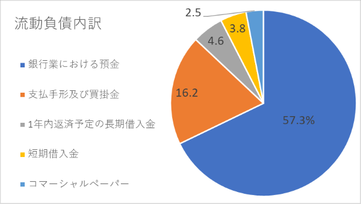
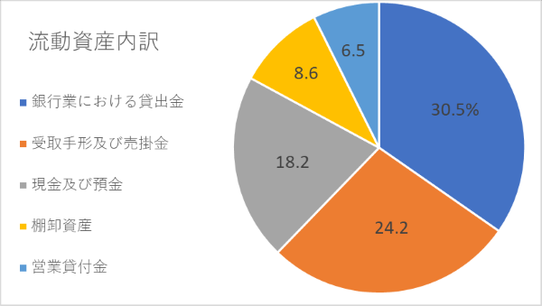

イオン企業分析 其の5
2020/5/19
イオンの企業分析を行っていきます。（5ページ目）
前頁のストック分析結果を流動資産・負債に焦点を当てて見ていきます。
目次
- 1 貸借対照表内訳（流動資産・負債）
- 2 考察
貸借対照表内訳（流動資産・負債）
前ページでイオンの貸借対照表をストック分析してみると、負債が資本に比べて圧倒的に多いということがわかったため、 負債を増加させているのは何が原因なのかを分析していく。
前にも述べたように負債は、一年以内に支払わなければいけない流動負債と 長期的に支払わなければいけない固定負債に分けられる。 今ページでは、流動負債と比較対象として流動資産の内訳について分析していく。データは、以下の通り
| 銀行業における預金 | 支払手形及び買掛金 | 1年内返済予定の長期借入金 | 短期借入金 | コマーシャルぺーパー |
| 3784320 | 1068427 | 303055 | 253395 | 168131 |
グラフで表すと、下図のようになる。
ここでは、流動負債のうち上位5項目を取り出して、比較している。 それぞれの定義は、以下に紹介
- 銀行業における預金：イオンはイオン銀行も子会社として経営しているため、 銀行での顧客の預金
- 支払手形：2企業間で期限までに記載された金額（仕入れ代金など）を払うことを証明する目的で発行される。
- 買掛金：仕入れ代金などを後で支払わなければならない義務
- 仕入れ債務：支払手形と買掛金を合わせたもの、短期の支払義務
- 借入金：企業が金融機関や特定人から借りた借金
- コマーシャルペーパー：短期資金調達のために公開市場で割引形式で発行する 無担保の約束手形、無担保のため信用のある企業のみ発行可
さらに、比較するために流動資産のうちの上位５項目を取り出して、比較していく。 データは以下のとおり
| 銀行業における貸出金 | 受取手形及び売掛金 | 現金及び預金 | 棚卸資産 | 営業貸付金 | 計 |
| 2049319 | 1626704 | 1221991 | 575748 | 433808 | 6713352 |
グラフで表すと、下図のようになる。
定義については、以下に紹介
- 銀行業における貸出金：イオン銀行が他の機関や個人に貸し出しているお金
- 受取手形及び売掛金：支払手形及び買掛金の対となるもの
- 棚卸資産：企業が販売する目的で一時的に保有している 商品や原材料
- 営業貸付金：イオンの場合、カード会員が利用したカードキャッシングの利用額のうち、 返済期日の迎えていない残高
考察
以上のことから、まず、流動負債の半分以上が銀行業における預金だということがわかるかと。 そこで、流動資産から銀行業における貸出金とを比べると、預金の半分ほどを運用していることがわかります。
また、支払手形及び買掛金と受取手形及び売掛金のどちらもが大きな割合を占めているため、 他企業との取引や銀行業でのお金の運用が流動比率に大きく関わってくると考えられます。
小売業だからね!
また、イオンはコマーシャルペーパーを発行できているため、ある程度の信頼のある企業だと外部から認められている企業であり、 現金及び預金の割合も大きいことから、上手く銀行預金などを運用すれば、 短期的には倒産するとは考えにくい企業だと言えます。
とりあえず、一安心かな
ここまで、イオンという企業全体の業績や財務状況を分析してきましたが、 イオンには、様々な事業が存在するため、別記事では、事業別にイオンの成長を分析していきます。（事業別利益）